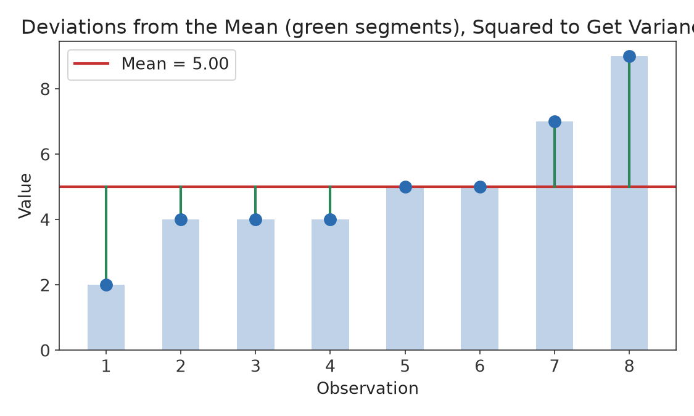
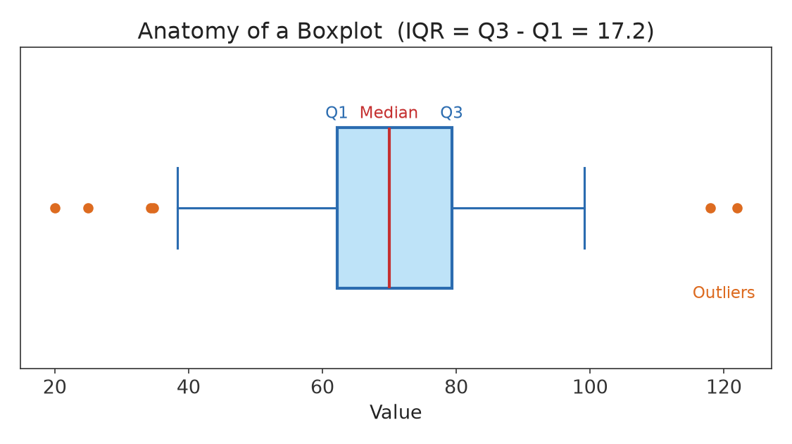

Part I · Descriptive Statistics & Exploratory Data Analysis · Chapter 4
Describing Data: Measures of Variability and Shape
Two data sets can have identical means and yet look completely different. A class where every student scores between 78 and 82 and a class where scores range from 40 to 100 could both average 80 — but they describe very different situations. This chapter develops the tools for measuring how spread out data is: range, variance, standard deviation, and the interquartile range, along with the five-number summary and the boxplot that visualizes it.
4.1 The Range
Definition
The range is the difference between the maximum and minimum values in a data set: Range = max − min.
The range is easy to compute but uses only two data points, ignoring everything in between, and is extremely sensitive to a single outlier. It is a useful first glance but rarely used as a serious measure of spread on its own.
4.2 Variance and Standard Deviation
A more informative approach measures how far, on average, each observation is from the mean — its deviation, xi − x̄.

Figure 4.1 — Each green segment is one observation's deviation from the mean. Variance is essentially the average of these deviations, squared.
Simply averaging the deviations always gives zero (positive and negative deviations cancel exactly), so instead we square each deviation before averaging, which is the idea behind variance.
Definition
The sample variance, denoted s², and sample standard deviation, denoted s, are:
s² = Σ(xi − x̄)² / (n − 1) s = √s²
The population versions, denoted σ² and σ, divide by N (the full population size) instead of n−1:
σ² = Σ(xi − μ)² / N
Why n − 1? (Bessel's Correction)
When the mean used in the formula is the sample mean x̄ rather than the true population mean μ, the deviations xi − x̄ tend to be slightly smaller on average than the true deviations xi − μ, because x̄ is calculated from, and therefore fits, the very data being measured. Dividing by n − 1 instead of n corrects this downward bias so that s² is, on average, a better estimate of the true population variance σ². This will matter a great deal starting in Chapter 13, when s is used to build confidence intervals and hypothesis tests.
Example 4.1
Five quiz scores: 4, 8, 6, 5, 7 (x̄ = 6).
xi
xi − x̄
(xi − x̄)²
4
−2
4
8
2
4
6
0
0
5
−1
1
7
1
1
Σ(xi − x̄)² = 4+4+0+1+1 = 10.
s² = 10 / (5 − 1) = 2.5 s = √2.5 ≈ 1.58
Standard deviation is preferred over variance for describing spread because it is expressed in the same units as the original data (if the data is in dollars, s² is in "squared dollars," which has no intuitive meaning, while s is in dollars). Roughly speaking, s measures a "typical" distance of an observation from the mean.
4.3 Percentiles and Quartiles
Definition
The p-th percentile of a data set is the value below which p percent of the observations fall. The quartiles divide sorted data into four equal parts: Q1 (25th percentile), Q2 (50th percentile, the median), and Q3 (75th percentile).
To find quartiles by hand: sort the data, locate the median (Q2), then Q1 is the median of the lower half and Q3 is the median of the upper half. (Different software packages use slightly different conventions for handling ties and even splits; for this course, use the "median of each half" method unless told otherwise.)
4.4 The Interquartile Range and the Five-Number Summary
Definition
The interquartile range is IQR = Q3 − Q1: the range of the middle 50% of the data. It is a resistant measure of spread, unaffected by outliers, in the same way the median is a resistant measure of center.
Combining the minimum, Q1, median, Q3, and maximum gives the five-number summary, a compact description of a data set's center, spread, and range that is resistant to outliers throughout.
The 1.5 × IQR rule for outliers
A common rule of thumb flags any observation as a potential outlier if it falls more than 1.5 × IQR below Q1 or above Q3:
A boxplot (or box-and-whisker plot) is a visual display of the five-number summary that also flags outliers using the 1.5 × IQR rule.

Figure 4.2 — Anatomy of a boxplot. The box spans Q1 to Q3 (the IQR); the line inside is the median; whiskers extend to the most extreme values within the fences; points beyond the fences are plotted individually as outliers.
Both 55 and 98 are within the fences, so this data set has no flagged outliers by this rule, even though 98 looks unusually high at a glance — the rule is a guideline, not an absolute test.
4.6 Comparing Spread Across Data Sets
Standard deviation and IQR are most useful in comparison — between two groups, or between a value and a distribution.
Example 4.3
Two machines fill bottles with a target volume of 500 mL. Machine A has s = 2 mL; Machine B has s = 8 mL. Both may have a mean of 500 mL, but Machine A is far more consistent — individual bottles from Machine B are much more likely to be noticeably over- or under-filled. In quality control, reducing variability (not just hitting the right average) is often the primary goal.
4.7 The Empirical Rule (Preview)
For data that follows a roughly bell-shaped (normal) distribution, standard deviation has a remarkably precise interpretation: about 68% of values fall within 1 standard deviation of the mean, about 95% within 2, and about 99.7% within 3. This empirical rule is developed fully in Chapter 6, once the normal distribution itself has been introduced — but it is worth previewing here as the payoff for why standard deviation, specifically, is the standard measure of spread used throughout the rest of this book.
Chapter 4 Summary
The range is the crudest measure of spread; it uses only the max and min.
Variance (s² or σ²) averages squared deviations from the mean; standard deviation (s or σ) is its square root and shares the units of the original data.
Sample variance divides by n − 1 (Bessel's correction) to correctly estimate the population variance.
Quartiles divide sorted data into four equal parts; the IQR = Q3 − Q1 is a resistant measure of spread.
The five-number summary (min, Q1, median, Q3, max) and the boxplot that visualizes it are resistant, compact descriptions of a distribution, including flagged outliers via the 1.5 × IQR rule.
Exercises
Compute the sample variance and standard deviation of: 2, 4, 4, 4, 5, 5, 7, 9. (This is the data set from Figure 4.1; the mean is 5.)
Explain in one or two sentences why standard deviation is usually reported instead of variance when describing data to a general audience.
For the data set 12, 15, 18, 21, 22, 24, 27, 30, 45, find the five-number summary and use the 1.5 × IQR rule to determine whether 45 should be flagged as an outlier.
Two sections of the same course report exam means of 78. Section A has s = 4; Section B has s = 15. Which section had more consistent performance? What might explain a standard deviation as large as 15 in Section B?
True or false, with justification: "If two data sets have the same range, they must have the same standard deviation."
Selected Solutions
Exercise 1
Deviations from mean 5: −3, −1, −1, −1, 0, 0, 2, 4. Squared: 9, 1, 1, 1, 0, 0, 4, 16. Sum = 32. s² = 32/(8−1) = 32/7 ≈ 4.57. s = √4.57 ≈ 2.14.
Exercise 3
Sorted, n = 9, median (5th value) = 22. Lower half (12,15,18,21): Q1 = (15+18)/2 = 16.5. Upper half (24,27,30,45): Q3 = (27+30)/2 = 28.5. IQR = 12. Upper fence = 28.5 + 1.5(12) = 46.5. Since 45 < 46.5, it is not flagged as an outlier by this rule, though it is clearly the largest and most extreme value in the set.
Exercise 5
False. Range only depends on the two most extreme values, while standard deviation depends on every value's distance from the mean. Two data sets can share a minimum and maximum (and thus the same range) while having very different amounts of spread among the values in between — for example, {0, 1, 1, 1, 10} and {0, 5, 5, 5, 10} both have range 10 but very different standard deviations.